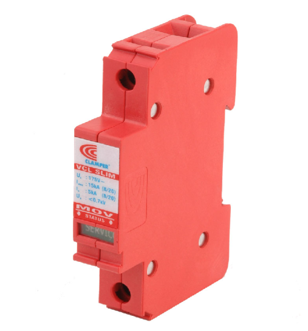
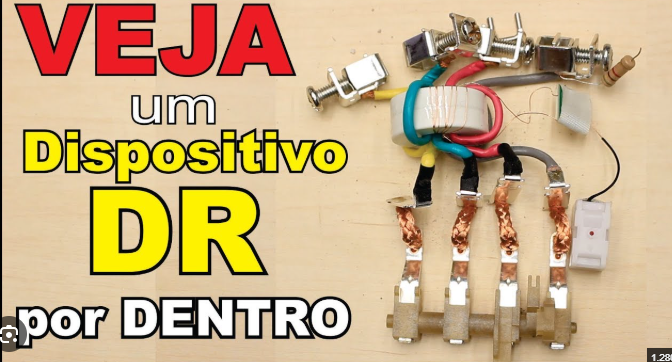

L1 monitorada
N monitorado
0 × IΔn
variante da foto
O toroide compara, a trava abre
Roteiro de investigação
- Comece em Circuito, com 10 A e fuga zero. Compare o que atravessa a fase com o que retorna por N.
- Aplique Falha de isolação. O caminho alaranjado retorna por fora do toroide e gera um sinal residual.
- Em Por dentro, veja o toroide, o enrolamento secundário, o relé sensível e a trava comum. Em Explodida, selecione cada conjunto.
- Pressione T. Observe o resistor de teste criando desequilíbrio sem utilizar o PE.
- Compare a fuga de 40 mA nas variantes de 30 e 300 mA. Na aba Sinais, observe a soma instantânea e a linha de sensibilidade.
- Em 70 A sem fuga, discuta por que um IDR não substitui a proteção contra sobrecorrente.
63 A não é 300 mA
63 A é a corrente nominal que o aparelho foi especificado para conduzir nas condições do fabricante. IΔn = 300 mA é a corrente diferencial residual nominal de atuação indicada na foto. Não é um limite de corrente de carga.
O exemplo de 30 mA representa uma variante de alta sensibilidade para discutir proteção adicional contra choque, dentro das condições aplicáveis. O DR não garante proteção em qualquer contato: uma corrente que passa entre fase e neutro e retorna integralmente pelo toroide pode não gerar residual detectável.
O aparelho fotografado é um interruptor diferencial residual (IDR), sem disparadores térmico e magnético de sobrecorrente. Um disjuntor com proteção diferencial integrada é outro equipamento. O ensaio de 70 A apenas evidencia essa diferença; operar acima de 63 A não é uma condição admissível de serviço deste modelo.
Modelo elétrico e tempo didático
Os quatro polos são representados, com uma carga monofásica didática entre L1 e N. L2 e L3 ficam sem carga. I(L1) = I(carga) + I(fuga) + I(teste), I(N) = I(carga). Portanto, IΔ = I(fuga) + I(teste), com conversão de mA para A. Todas essas grandezas são valores eficazes prescritos, senoidais e em fase.
Em um circuito trifásico real, o sensor percebe a soma instantânea dos condutores ativos; não se subtraem aritmeticamente valores eficazes de fases diferentes. O painel Sinais mostra essa soma no caso monofásico simplificado. O PE não atravessa o toroide.
O modelo adota disparo em IΔ ≥ IΔn. O tempo ilustrativo é max(40 ms, 120 ms / (IΔ/IΔn)), apresentado 8 vezes mais lentamente. O contador volta a zero se o residual cai abaixo do limiar. Não são tempos certificados do STECK e a faixa real de atuação não se resume a um único ponto universal.
Ao abrir, todas as correntes do circuito modelado zeram. O último residual que causou disparo permanece registrado. O gráfico mostra duas oscilações senoidais em câmera lenta; não é aquisição de osciloscópio. Não se modelam tensões de contato, corpo humano, impedância do solo ou correntes residuais contínuas.
Referências do projeto e documentação
Embora tenham sido salvos como “dps”, os arquivos fornecidos mostram um DR: carcaça branca, quatro polos, comando vermelho, botão T, toroide e condutores internos. O desenho é funcional e simplificado; não é um esquema de fabricação ou de instalação.


STECK — família SDR 4P 300 mA · STECK — SDR 4P 63 A 30 mA · Schneider Electric — verificações de DR.